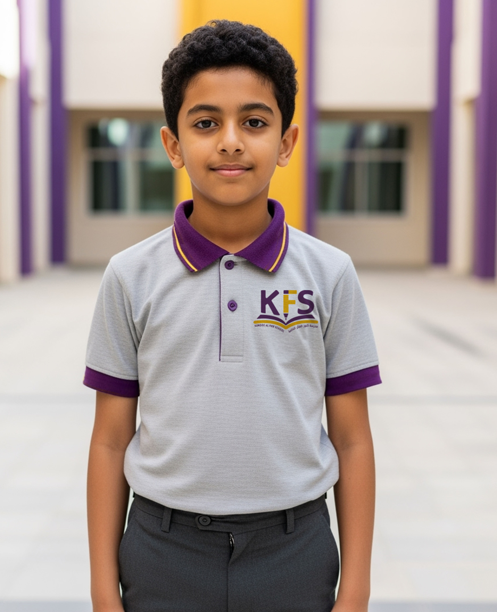
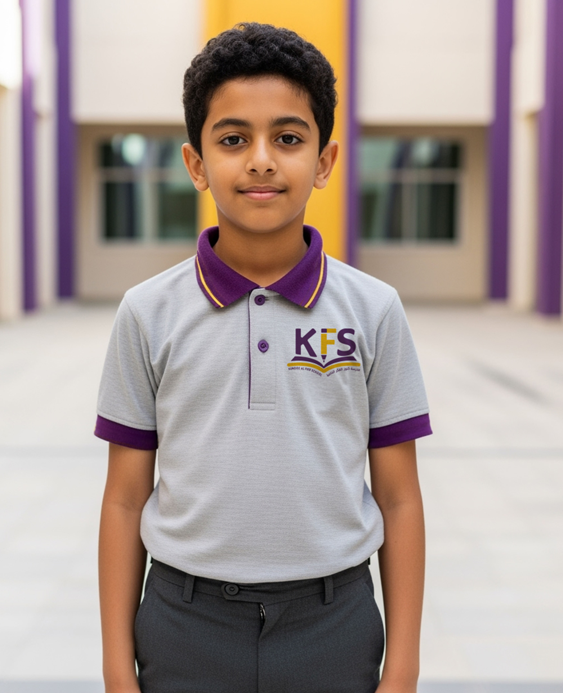

Why Our School?
Why choose KFS? A comprehensive, high‑quality bilingual education in the heart of Muscat.
Affordable Private Education
Excellence in teaching and learning at accessible fees.
Holistic Development
Academics alongside career readiness and life‑skills.
Whole‑Child Approach
Mental, emotional, social, physical, artistic, and creative growth.
Progressive Learning
Future‑ready skills for success in a dynamic global environment.
Bilingual Education
English and Arabic across all areas of the curriculum.
Academic Excellence
Practical, relevant content that delivers strong outcomes.
Activities & Culture
Diverse cultural and sports programs at low or no cost.
Coding & Robotics
Embedded within the curriculum (with Education Resolute).
Cambridge Alignment
Collaboration with national networks; pathways aligned to Cambridge.
 
